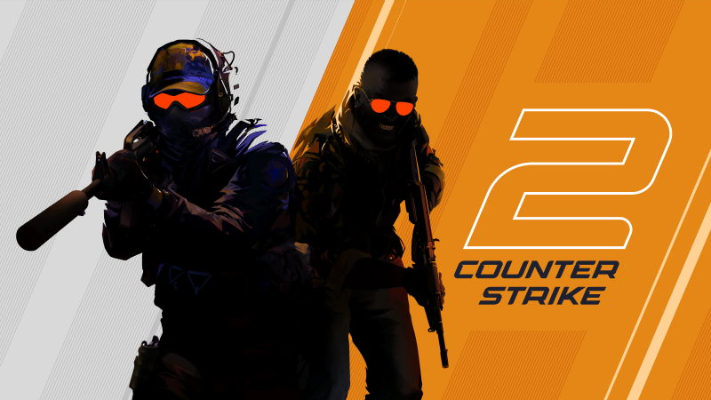

Co to CS:GO?
Counter-Strike: Global Offensive (CS:GO) to jedna z najpopularniejszych gier FPS na świecie. Counter-Strike 2 to najnowsza odsłona legendarnej serii gier FPS od Valve, która zyskała ogromną popularność wśród graczy na całym świecie. Gra jest oparta na nowym silniku Source 2, co zapewnia lepszą grafikę, realistyczną fizykę i ulepszoną rozgrywkę
Na czym polega gra CS:GO?
Counter-Strike: Global Offensive, podobnie jak poprzednie gry z serii Counter-Strike, jest wieloosobową grą z gatunku strzelanek pierwszoosobowych, skupiającą się na wykonywaniu zadań. Dwie przeciwne drużyny z postaciami terrorystów i antyterrorystów rywalizują w różnych trybach gry wykonując określone cele, np. Jeśli grasz po stronie T, twoim celem jest przejęcie kontroli nad miejscem podłożenia bomby A lub B i podłożenie bomby , eliminując wszystkich CT, którzy staną ci na drodze. Po stronie CT twoim zadaniem jest powstrzymanie T przed podłożeniem bomby lub rozbrojenie jej, jeśli uda im się dotrzeć tak daleko.

Jakie minimalne wymagania sprzętowe dla gry trzeba posiadać?
- Procesor: 4-wątkowy Intel® Core™ i5-750 lub lepszy
- Karta Graficzna: O pamięci co najmniej 1 GB obsługująca Shader Model 5.0 i zgodna z DirectX 11
- DirectX: Wersja 11 lub wyższa
- Pamięć RAM: 8GB
- Miejsce na Dysku: 85 GB dostępnej przestrzeni dyskowej
- System operacyjny: Windows® 10 lub wyżej